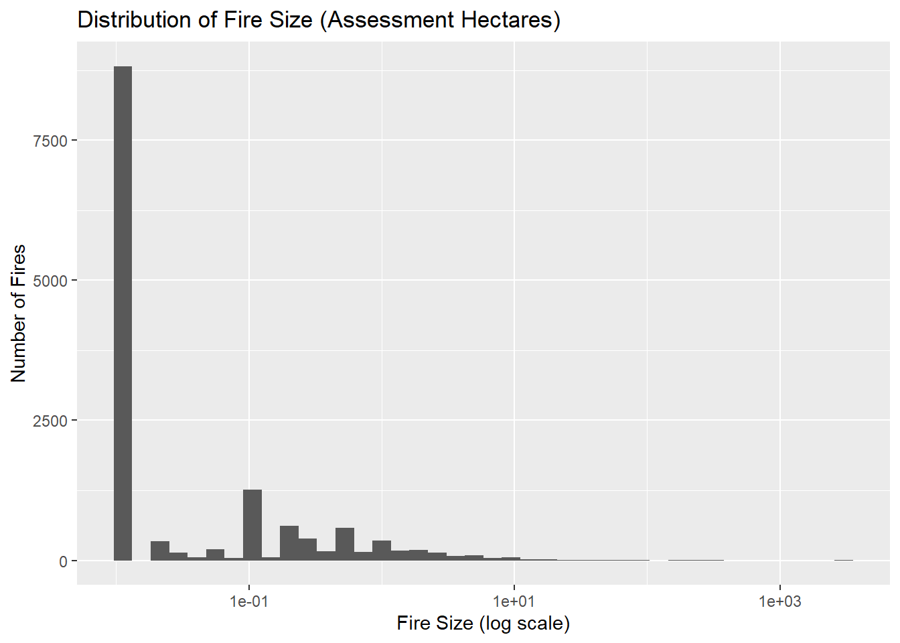
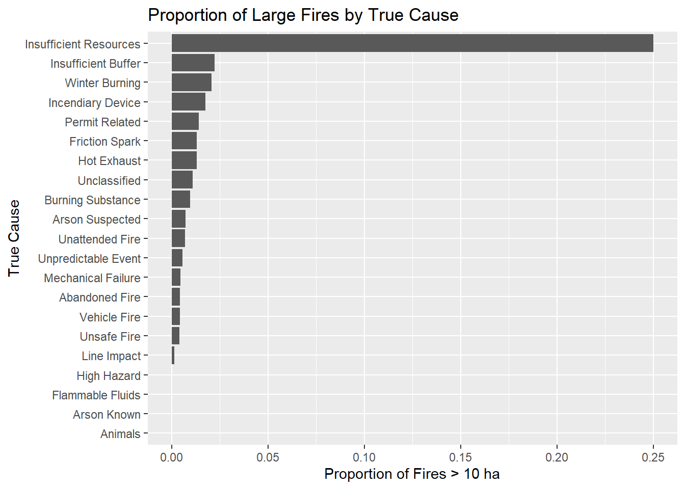

Dataset including information on wildfires in the province of Alberta from 2006 to 2024, inclusive. Information tracked for each fire includes: cause, size, location (latitude and longitude, legal land description, and forest area), time and duration, weather conditions, staffing and physical resources used to suppress the fire, and area burned.
This dataset contains information on wildfires in Canada, compiled from official government sources.
Key Features of the Dataset
Fire size (in hectares)
Cause of fire (e.g., lightning, human activity)
Detection method
Response team size
Latitude/longitude of the fire
Weather conditions at the time of fire
Purpose and Use Cases
The data was collected to monitor, assess, and respond to wildfire risks across regions. Wildfires have significant environmental, social, and economic impacts—especially for remote, Indigenous, and underserved communities that may lack the infrastructure to respond effectively.
From an equity and inclusion perspective, studying wildfire data can help identify geographic and resource disparities in fire detection and containment efforts, as well as the disproportionate risks certain populations face due to climate change and infrastructure gaps.
Case Study
Objective
Can we identify the environmental and human factors most associated with large wildfires (>10 hectares)?
The goal is to explore potential predictors of fire size, such as weather, fire cause, and detection method, and provide insights that could inform early interventions and resource planning.
Methodology
1. Data Cleaning & Processing
Converted fire size to numeric
Created a binary variable large_fire (TRUE if >10 ha)
Filtered out incomplete records
2. Exploratory Data Analysis (EDA)
Fire Size Distribution
library(ggplot2)ggplot(wildfire_clean, aes(x = ASSESSMENT_HECTARES)) +geom_histogram(bins =40) +scale_x_log10() +labs(title ="Distribution of Fire Size (Assessment Hectares)",x ="Fire Size (log scale)",y ="Number of Fires" )

Proportion of Large Fires by Cause
wildfire_clean %>%group_by(TRUE_CAUSE) %>%summarize(prop_large =mean(large_fire, na.rm =TRUE)) %>%ggplot(aes(x =reorder(TRUE_CAUSE, prop_large), y = prop_large)) +geom_col() +coord_flip() +labs(title ="Proportion of Large Fires by True Cause",x ="True Cause",y ="Proportion of Fires > 10 ha" )

3. Logistic Regression Model
We build a logistic regression model to predict the likelihood of a fire becoming large based on temperature, wind speed, and cause.
The logistic regression model revealed that higher wind speeds are strongly associated with an increased likelihood of a fire becoming large (over 10 hectares), consistent with our expectations about fire spread dynamics.
Surprisingly, temperature showed a small negative association with fire size, though this may be influenced by interactions with other environmental factors like humidity or fuel type.
Among causes, “Insufficient Resources” and “Line Impact” were associated with significantly higher odds of large fires. This suggests that both human-related limitations and infrastructure vulnerability (like power lines) play a role in fire escalation.
The detection agent type showed weak evidence that fires detected by UNP agents may be less likely to become large, compared to FPD Staff, but the effect was not statistically strong (p = 0.09). Further exploration is needed here, especially considering the early intervention ability of different detection teams.
These findings provide insights into key environmental and operational factors influencing wildfire severity. Importantly, they point to the need for targeted mitigation strategies in areas with poor detection access or high infrastructure risks.
In the broader context of equity, this analysis reinforces that resource constraints and delayed detection—often more common in remote or underfunded regions—can amplify wildfire impacts. Data-informed strategies can help ensure more equitable protection against climate-driven disasters.
5. Interpretation Boost using marginaleffects
Wind Speed
As wind speed increases, the model estimates a higher probability of a fire becoming large (>10 hectares). However, the variability in the predicted probabilities also increases at higher wind speeds, as indicated by the wider confidence intervals. This suggests that while there is a general upward trend, the model’s certainty about the exact magnitude of the effect decreases in this range—likely due to fewer observations or greater variability in fire outcomes at high wind speeds.
library(marginaleffects)
Warning: package 'marginaleffects' was built under R version 4.4.3
As temperature increases, the model predicts a relatively stable probability of a fire becoming large. The trend line flattens and the confidence intervals narrow, indicating that the model is more confident and consistent in its estimates across higher temperature ranges. This suggests that the relationship between temperature and fire size is more stable and predictable at higher temperatures, possibly due to a larger number of observations or less variability in outcomes.
The predicted probability of a large fire is near zero for most TRUE_CAUSE categories, indicating that these causes (e.g., natural ignition, campfires, equipment use) are generally not associated with large-scale fires. However, the category “Insufficient Resources” stands out with a significantly higher predicted probability and a wide confidence interval. This suggests that fires classified under this cause are much more likely to become large, though the wide interval reflects substantial uncertainty — likely due to a small number of observations in that category.
## categorical variable "TRUE_CAUSE"plot_predictions(model, by ="TRUE_CAUSE") + ggplot2::theme(axis.text.x = ggplot2::element_text(angle =45, hjust =1)) + ggplot2::labs(title ="Predicted Probability of Large Fire by True Cause",x ="True Cause",y ="Predicted Probability" )
Detection Agent Type
Although fires detected by AIR agents appear more likely to become large, the model is relatively uncertain about this pattern. The wide confidence interval indicates that this result should be interpreted cautiously, and may reflect data sparsity or high variability in fire outcomes for AIR-detected cases.